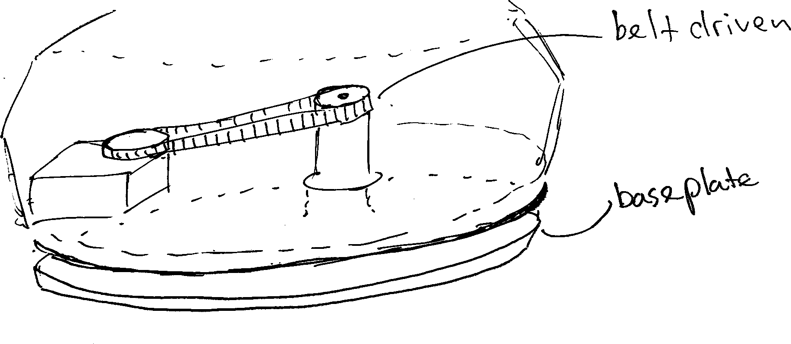
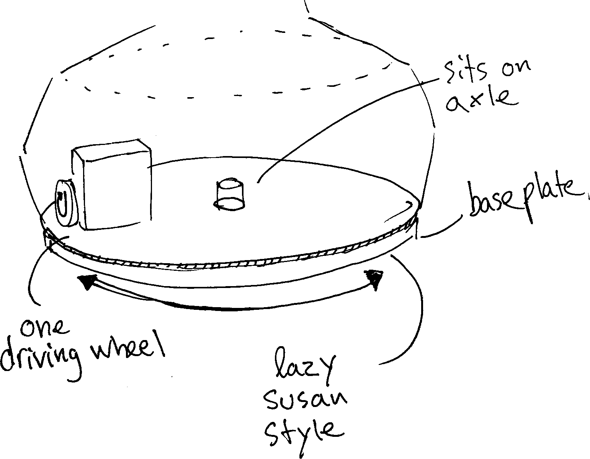
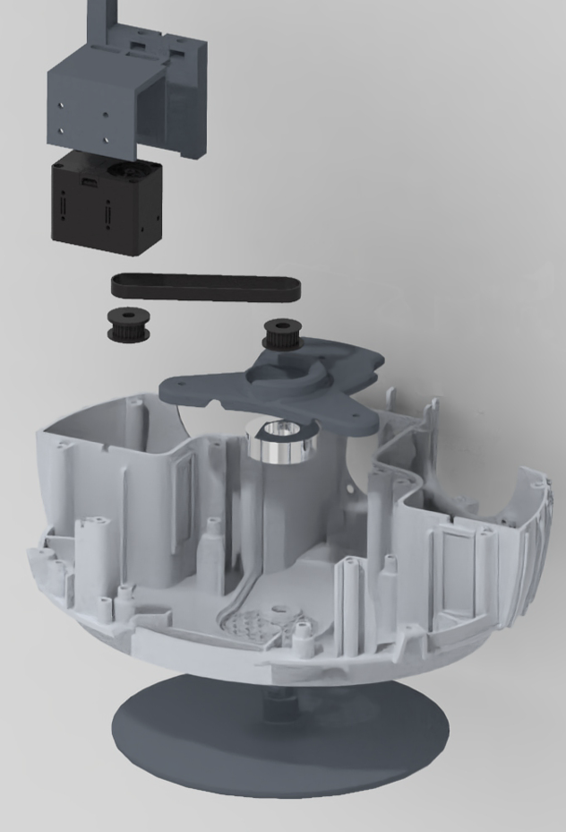
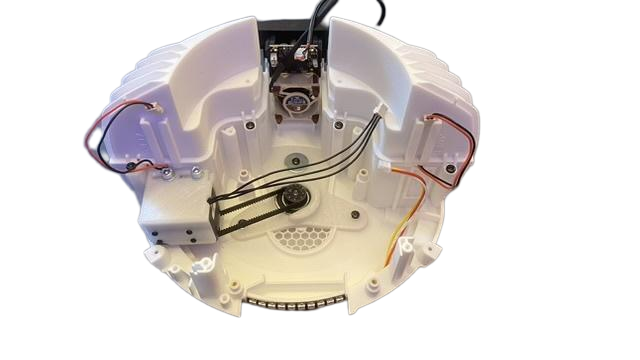
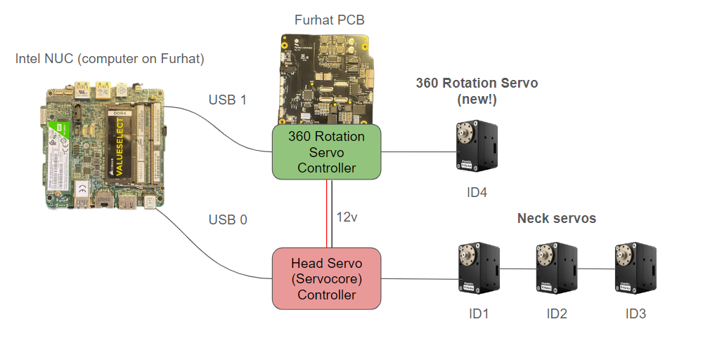

360° Furhat
A belt-driven rotating-base prototype using Furhat’s existing visual tracking.
- Project period
- 05/2025 – 05/2025
- Context
- Prototyping & Concepting team at Furhat Robotics
- Status
- Working rotating-base proof of concept
- My contribution
- Collaborative rotating-base design and prototyping
In collaboration with: Jonathan Majberger Lutz ↗ Ben Wheeler ↗ Qing Gu ↗
A working rotating-base demonstrator turning towards a detected user, with cable and coordination limits.

Context and my role
I worked with Furhat’s Prototyping & Concepting team on a rotating-base demonstrator. The documented prototype build took two weeks in 05/2025, covering design, prototyping and assembly. We aimed to let the entire robot turn towards users, complementing its existing eye and head movements.
The existing platform supplied visual tracking, the onboard computer and neck control. Our demonstrator added a base drive and a separate body-control loop; fully coordinated motion remained an integration goal.
Choose an offset belt drive that fits the body
We built early belt-driven and vertical friction-wheel prototypes and tried them with additional weight in the robot base. We continued with the belt concept, carrying over useful servo-mount and baseplate ideas from the wheel prototype. We did not benchmark comparative torque, slip or efficiency.
The computer left insufficient room for a motor directly on the central axis. The crowded front region also constrained airflow. A belt allowed the servo to sit on the left, driving a pulley on the stationary central support while the robot rotated around a bearing. A split mount simplified assembly and belt tensioning.


Package the pulley and bearing beneath the computer
A thin stationary baseplate and printed central axis supported the robot through a repurposed neck bearing. The height available beneath the computer ruled out standard pulleys and their fasteners. A printed pulley fitted the D-shaped shaft within that envelope.
The bearing had internal play and was not primarily designed for the axial load from the robot’s weight. It supported this prototype, while a more suitable support arrangement remained unresolved.


Use CamCore positions to command body velocity
Furhat’s existing CamCore published User0’s detected three-dimensional position over ZeroMQ. The body controller converted that position to yaw, then used a PID controller to turn angular error into a requested motor velocity. The PID controlled motion; it did not detect people.
For rapid testing, an additional motor controller connected to the computer over USB and shared the existing head-tilt system’s 12 V supply. Head and body ran as separate devices and scripts. The demonstrator tracked only the first detected user (User0).
- 01
Initialise
Open ZeroMQ port 5556
Connect to Dynamixel
Remember the start position - 02
Wait for camera input
Receive User0’s 3D position from CamCore
- 03
Track the user
3D position → yaw angle
PID controller → motor velocity
Send velocity to the servo - 04
Recenter
Return to the remembered start position
Results and limitations
The assembled prototype demonstrated body rotation towards a detected user. Repeated turns twisted or wrapped connected power, Ethernet and peripheral cables. Unlimited continuous rotation and unrestricted unattended use were not established, and the base added no omnidirectional vision.
We observed wobble during larger head and body movements. Printed-axis fit and bearing play were suspected contributors, without an isolated cause. Head overshoot and simple body movement showed the need for shared planning. ServoCore integration, multi-user attention, cooling checks, belt-tension retention and long-term durability remained open; we did not measure tracking error or latency.
Prototype dimensions and control notes
We built the prototype with a 160 mm-diameter, 5 mm-thick printed baseplate, approximately 3 mm underside clearance, a 200 mm-long and 6 mm-wide GT2 belt, an approximately 18 mm bearing-and-pulley envelope and roughly 80 mm motor-to-axis offset. These are prototype dimensions.
The control sequence returns to the remembered start position, but the recentering trigger is unspecified.
The separate body controller was proposed for later integration into ServoCore. ServoCore integration remained unfinished. We had not validated a safe rotation range or cable-management procedure.
